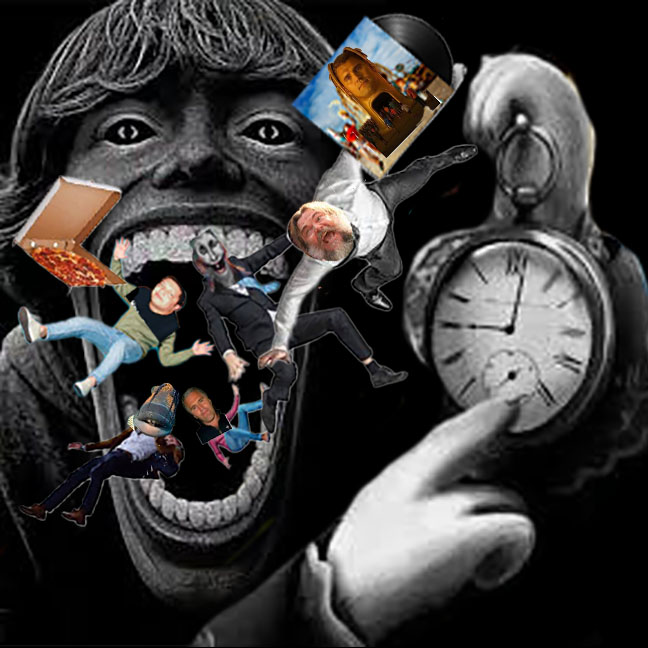

The Doom-scroll Clock
2026

(February 14, 2026)
The title of my work is "The Doom-scroll Clock" in reference of the familiar "doomsday clock". The doomsday clock is often a name used for the estimated likehood of a human-made globe catastrophe. For my work, it's showing more of how doomscrolling for us and being distracted by memes is more likely a silent way of wasting our times from not doing anything productive in life. From what I'm demonstrating, it's like this media is consuming us and our time instead of us consuming it. I do add very familiar memes and references that my class mates may know.
I used Adobe photoshop to create this mashup, honestly it's my first time using photoshop besides the glitch assignment so I had no idea how to actually use the tools. Thankfully, I had my aunt show me how I can do the basics. With my acquired knowledge, I was able to create exactly what I had envisioned in my head and I'm happy for it. I became interested with my choice because it just made sense to me to put everything in the way I did. I wanted to capture how consumerism looks in memes. I used my knowledge of memes from instagram reels and only from instagram. It's the only app I used to actually watch reels and memes. More specifically, alot of what I used were very popular last year in 2025 and still is popular now, but mostly this screams 2025 more than anything else with references like Jack Black's "Steve" from the Minecraft movie, the "6-7" kid, the rabbit from Alice and Wonderland: "All roads lead to Rome", Sal from impractical Jokers as Tonka Jahari, and finally I of course added kirkification on here. These were, I'd say, the peak brainrot memes of 2025 and are very familiar. I transform it all to look like these brainrot memes are consuming us literally so it's obvious what my point is in it. And the watch on it is to show how this brainrot is waisting our time.
The statement as already mentioned, is supposed to be that we are at times wasting our time and life doomscrolling and looking at some of these brainrot memes. That this is eating up our time and attention. As the intended audience, the references are funny and catch our attention. I'll admit that I did and still do laugh pretty hard at memes like these, as some of them are already washed up, there's always new ones that will do the same action to us: distraction. Of course memes are hilarious and we do need that good laugh, but it comes to a point where alot now have no exact correlation with anything and quite literally mean nothing and it's damaging our sense of humor.